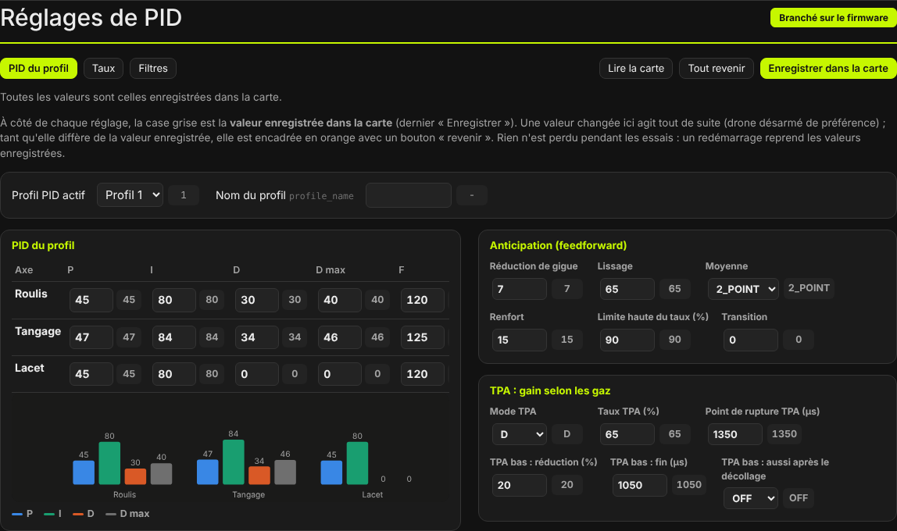
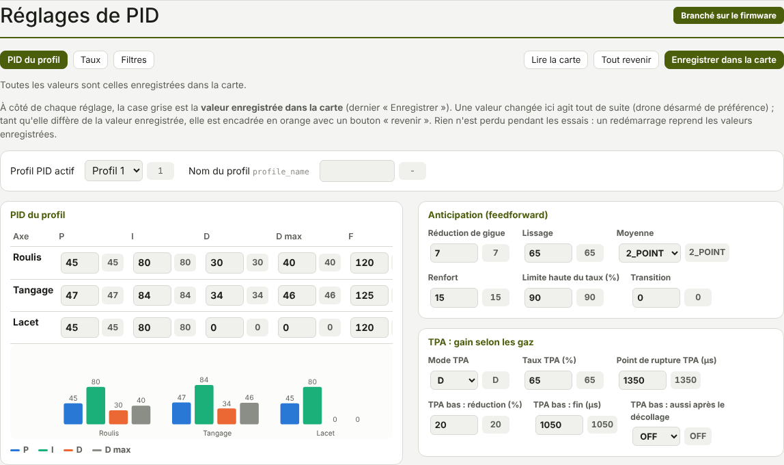
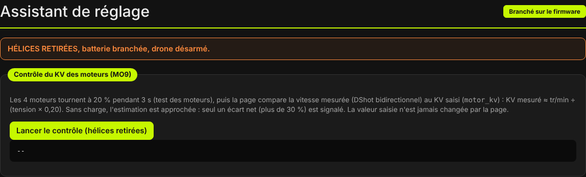
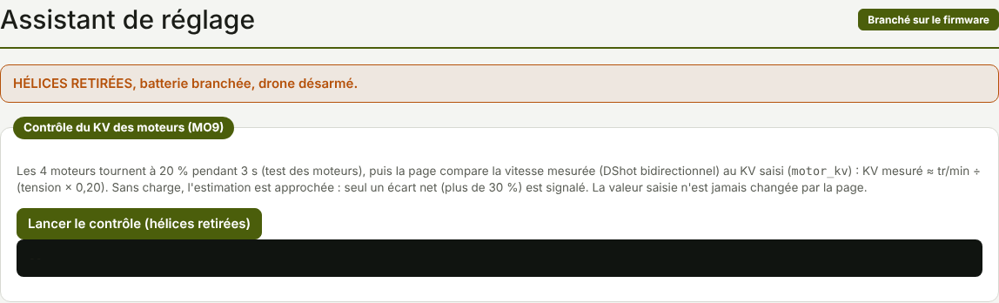

TRUEGLIDE
TRUEGLIDE Réglages de PID et presets
L'onglet Réglages de PID (groupe Réglage du vol) lit et change les PID, les taux et les filtres de la carte. Chaque valeur changée agit tout de suite ; elle n'est gardée qu'après Enregistrer dans la carte. Un preset garde un réglage complet dans un fichier.


Profils PID et de taux
La carte garde 6 profils PID et 6 profils de taux. En haut du sous-onglet PID du profil, la
liste Profil PID actif choisit le profil affiché et utilisé ; le profil de taux se choisit de la même façon
en haut du sous-onglet Taux. Chaque profil a un nom de 8 lettres au plus (profile_name,
rateprofile_name).
Sur le terrain, sans PC, le menu des lunettes change aussi les deux profils (firmware 0.8.4).
Valeur enregistrée, revenir
- La case grise à côté de chaque réglage est la valeur enregistrée dans la carte (dernier « Enregistrer »).
- Une valeur changée est envoyée tout de suite à la carte (drone désarmé de préférence). Tant qu'elle diffère de la valeur enregistrée, elle est encadrée en orange avec un bouton revenir, qui remet la valeur enregistrée.
- Tout revenir liste les réglages changés, demande confirmation, puis les remet tous à leur valeur enregistrée.
- Enregistrer dans la carte garde les valeurs actuelles (commande
save, refusée drone armé). - Lire la carte relit toutes les valeurs.
Rien n'est perdu pendant les essais : un redémarrage reprend les valeurs enregistrées. La ligne sous les boutons dit combien de réglages diffèrent de la valeur enregistrée.
Les trois sous-onglets
PID du profil
- PID du profil : tableau P, I, D, D max et F par axe (roulis, tangage, lacet), avec un graphe en barres des P, I, D et D max.
- Curseurs (réglage simplifié) : mode OFF, RP ou RPY et huit curseurs (1,00 = défaut). Les PID du tableau ne changent qu'au clic sur Appliquer les curseurs aux PID (RP : roulis et tangage ; RPY : aussi le lacet ; OFF : rien).
- Angle et horizon : force et inclinaison maximale du mode ANGLE, réglages de HORIZON.
- Gain des PID selon les gaz : courbe du TPA et du TPA bas, calculée depuis les réglages lus.
- À droite : anticipation (feedforward), TPA, I-term, anti-gravité, D max, gaz et moteurs, ralenti dynamique ; repliés en bas : launch control, sortie de crash, limites et lacet.
Taux
Type de taux (BETAFLIGHT ou ACTUAL), puis par axe : Sensibilité au centre, Taux max, Expo, Limite (°/s). Le graphe Courbes des taux donne la vitesse demandée selon la course du manche, avec pour chaque axe la vitesse à fond et à mi-course. À droite : réglages des gaz et Courbe des gaz.
Filtres
Gyroscope (passe-bas, coupe-bandes fixes, coupe-bandes dynamiques, filtre RPM) et terme D (passe-bas, coupe-bande, passe-bas du P du lacet). Deux graphes donnent la part du signal qui traverse les filtres passe-bas et les coupe-bandes fixes selon la fréquence du bruit ; les coupe-bandes qui suivent le bruit (RPM, dynamiques) ne sont pas dessinés, car ils bougent avec les moteurs.
Taux
Défaut d'XPro : rates_type ACTUAL, sensibilité au centre 7, taux max 67, expo 0, sur les trois axes.
En ACTUAL, ces deux nombres comptent en dizaines de °/s : 70 °/s de pente au centre, 670 °/s manche à fond,
comme le défaut de Betaflight.
| Manche (du centre au bout) | 25 % | 50 % | 75 % | 100 % |
|---|---|---|---|---|
| Vitesse demandée, défaut ACTUAL | 55 °/s | 185 °/s | 390 °/s | 670 °/s |
La formule ACTUAL d'XPro a été comparée aux consignes enregistrées par Betaflight dans les vols de KarRmen (taux ACTUAL 16/50/15, 16/50/20 et 15/40/15) : écart médian de 0,6 à 2,4 °/s, sur des consignes jusqu'à 411 °/s. Les plus grands écarts (6 à 30 °/s) viennent du lissage des manches de Betaflight, appliqué avant l'enregistrement de la consigne.
Sous Betaflight, KarRmen vole à 500 / 500 / 400 °/s avec un centre à 160 / 160 / 150 °/s : avec les taux par défaut, XPro est deux fois plus doux au centre des manches. Pour retrouver les taux de Betaflight, les régler ici ou charger un preset.
Presets
Le cadre Presets (pré-réglages), en bas de l'onglet, garde un réglage complet dans un fichier texte, pour le
partager ou le remettre en deux clics. Le fichier contient les lignes set du profil PID et du profil
de taux actifs (PID, filtres, anticipation, taux…), puis save.
- Enregistrer le profil actuel dans un fichier : télécharge
preset_xpro_profil…_date.txt(carte connectée). - Choisir un fichier preset : ouvre un fichier
.txt. Son nom et son nombre de lignes s'affichent ; les lignes se lisent en dépliant le cadre. - Appliquer le preset à la carte : après confirmation, envoie les lignes une par une. La carte répète chaque valeur ; le logiciel vérifie qu'elle a pris la valeur envoyée et liste sous « PAS PRIS » ce qu'elle a refusé. Il signale aussi un enregistrement non confirmé.
Un preset de Betaflight (lignes set) se charge aussi : ce qu'XPro n'a pas est signalé « sans
effet ».
Réglages de KarRmen
Le cadre Réglages de KarRmen à coller contient tous les réglages de KarRmen sous Betaflight (dump all du 14/10/2026 : 79 valeurs différentes des défauts d'XPro) : filtres, AIRMODE, télémétrie, props out, noms, OSD aux places de KarRmen, ALTHOLD, plages des interrupteurs, profil PID 1 « LAUNCH », profil PID 3 « 15053S », profil de taux 1 « LAUNCH ». Voir les lignes envoyées les montre ; Appliquer à la carte les envoie avec les mêmes vérifications qu'un preset.
Les taux des autres profils de KarRmen ne sont pas dans le dump relevé : le profil de taux 2 (actif) garde les
défauts (670 °/s). Un diff all complet de Betaflight peut aussi être collé dans la
Ligne de commande.
Échelles du PID
Les mêmes chiffres de PID donnent-ils la même force de correction qu'avec Betaflight ? La réponse est mesurée sur les journaux Blackbox de KarRmen sous Betaflight (2025.12.2 et 4.4.2, 37 vols ou essais), sans lire le code de Betaflight. Unité commune : sortie du PID en unités de Betaflight (XPro × 1000).
| Terme | Betaflight, mesuré sur KarRmen | XPro | Verdict |
|---|---|---|---|
| P roulis / tangage | 0,032 × écart (°/s) par point | 0,032 | identique |
| P lacet | 0,030 à 0,032 | 0,032 | identique |
| I roulis / tangage | 0,24 à 0,28 par seconde | 0,244 | identique |
| I lacet | 0,61 à 0,62 par seconde | 0.8.3 : 0,244 ; 0.8.4 : × 2,5 | corrigé en 0.8.4 |
| D roulis / tangage (gaz bas, sous le TPA) | 4,4 à 5,3 × 10−4 × accélération (°/s²) | 5,3 × 10−4 | identique |
| Mixeur (moteur − moyenne) | 0,96 à 0,99 × somme / 1000, hors saturation | 1 × somme | identique |
| Mode ANGLE (manche au centre) | 3,6 °/s par degré pour angle_p_gain 50 | 0.8.3 : 5,0 ; 0.8.4 : 3,6 (0,072 par point) | corrigé en 0.8.4 |
| Feedforward | non vérifié | — | à mesurer |
Depuis la 0.8.4, l'I du lacet vaut 2,5 fois celui du roulis par point, et le mode ANGLE 0,072 °/s par degré et par point (au lieu de 0,1). P, I et D du roulis et du tangage et le mixeur étaient déjà identiques.
Assistant de réglage
L'onglet Assistant de réglage (même groupe) contient pour l'instant le contrôle du KV des moteurs.
Hélices retirées, batterie branchée, drone désarmé : Lancer le contrôle (hélices retirées) fait tourner les
4 moteurs à 20 % pendant 3 s, puis compare la vitesse mesurée (DShot bidirectionnel) au KV saisi
(motor_kv) : KV mesuré ≈ tr/min ÷ (tension × 0,20).
Sans charge, l'estimation est approchée : seul un écart de plus de 30 % est signalé. La page ne change jamais la
valeur saisie. Sans tension, sans vitesses ou sans motor_kv lisible, elle dit pourquoi le contrôle
est impossible.

